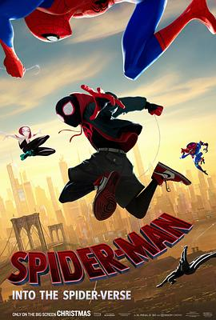

蜘蛛侠：平行宇宙 / Spider-Man: Into the Spider-Verse
又名：蜘蛛侠：新纪元 / 蜘蛛人：新宇宙(台) / 蜘蛛侠：跳入蜘蛛宇宙(港) / 蜘蛛侠：平行世界 / Spider-Man: a New Universe
作品信息
| 导演 | 鲍勃·佩尔西凯蒂 / 彼得·拉姆齐 / 罗德尼·罗斯曼 |
| 编剧 | 菲尔·罗德 / 罗德尼·罗斯曼 / 布莱恩·本迪斯 / 萨拉·皮凯利 / 史蒂夫·迪特寇 / 斯坦·李 / 戴维·海因 / 法布里斯·萨波尔斯基 |
| 主演 | 沙梅克·摩尔 / 杰克·约翰逊 / 海莉·斯坦菲尔德 / 马赫沙拉·阿里 / 布莱恩·泰里·亨利 / 莉莉·汤姆林 / 劳伦·维勒斯 / 佐伊·克罗维兹 / 约翰·木兰尼 / 贵美子·格伦 / 尼古拉斯·凯奇 / 凯瑟琳·哈恩 / 列维·施瑞博尔 / 马文·琼斯三世 / 克里斯·派恩 / 娜塔丽·莫瑞丝 / 奥斯卡·伊萨克 / 格蕾塔·李 / 斯坦·李 / 乔玛·塔科内 / 华金·科西奥 / 蕾克·贝尔 / 梅勒妮·海恩斯 / 尼克·杰恩 / 穆尼卜·拉赫曼 / 卡洛斯·萨拉戈萨 / 黛西·罗斯·布莱内斯 / 里夫·霍顿 / 哈里森·奈特 / 莱克斯·朗 / 凯特琳·麦肯纳-威尔金森 / 斯科特·门维尔 / 克里斯托弗·米勒 / 德维卡·帕利赫 / 柯特妮·佩尔顿 / 克里斯蒂·法瑞斯 / 杰奎琳·皮诺尔 / 贾斯汀·沉卡罗 / 梅利莎·斯特姆 |
| 类型 | 动作 / 科幻 / 动画 / 冒险 |
| 制片国家/地区 | 美国 |
| 语言 | 英语 / 西班牙语 |
| 上映日期 | 2018-12-21(中国大陆) / 2018-12-14(美国) |
| 片长 | 116分钟(中国大陆) / 117分钟(美国) / 143分钟(加长版) |
| IMDb | tt4633694 |
最后一次看到是 2026-08-12T21:12:02+08:00 · 豆瓣原页